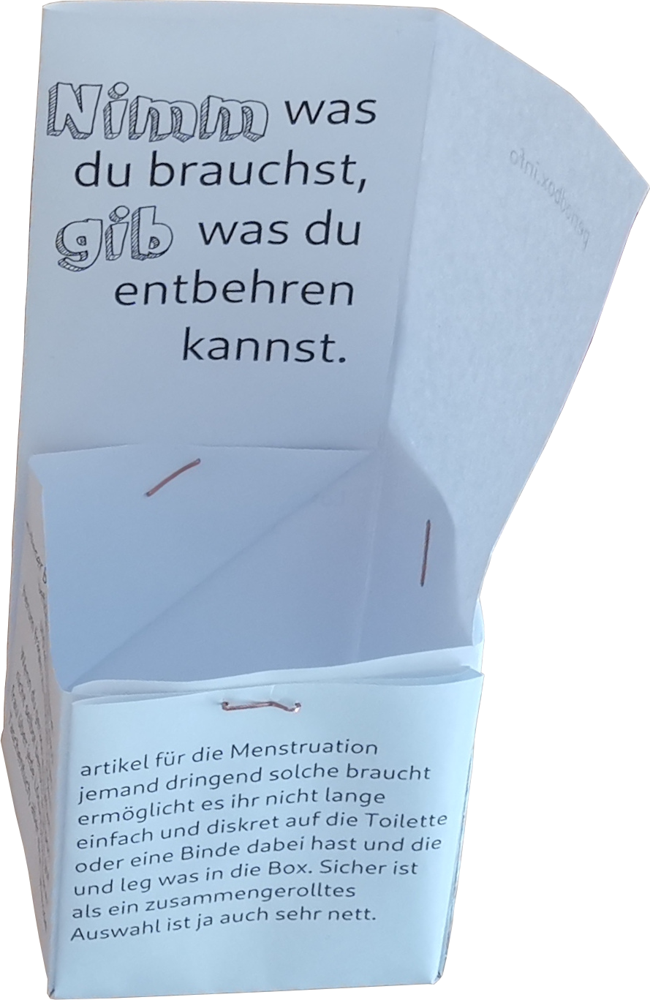

 Hey, schön, dass du auf diese Webseite gefunden hast, denn wahrscheinlich bedeutet das, dass du irgendwo eine periodbox gesehen und den QR-code gescannt hast oder dass dir von einer begeisterten AktivistIn die periodbox empfohlen wurde, beides ist großartig! Die periodbox ist ein Papp- oder Papierschachtel, die dazu gedacht ist auf den Damentoiletten (oder Toiletten für Personen die menstruieren) zu stehen und dort Hygieneartikel zur Verfügung zu stellen. Die Idee dabei ist, dass es vielen Leuten unangenehm ist nach Menstruations-Artikeln zu fragen, wenn sie keine dabei haben und es ebenfalls unangenehm ist irgendwelche Ersatz-Artikel wie Toilettenpapier oder Socken zu verwenden. Menstruierende wie auch Betreiber von Etablissements wie Kneipen, Diskotheken, Restaurant, Pubs, Kinos, Clubs etc. können eine solche Box auffüllen und denen, die es brauchen so Gästinnen einen sicheren Besuch bescheren bei dem sie sich wohl fühlen.
Die Idee zu der periodbox kam in einem Irish Pub, eine Freundin hatte inzwischen mehrere andere Frauen gefragt ob sie Menstruations-Artikel dabei hätten. Nicht gefragt hat sie Männer, einerseits aus Scham, mehr aber wegen mangelnder Erfolgsaussichten. Ich war dann einerseits frustriert, wozu trage ich tagtäglich drei Tampons und zwei Binden mit mir herum, wenn ich dann nicht danach gefragt werde? Also ich wäre gerne hilfreich gewesen, aber das hat überhaupt nicht geklappt. Und auf der anderen Seite ist es halt auch blöd für die Freundin, dass sie so lange um Hilfe bitten musste und einfach keine fand. Und an jenem Abend fand ich, dass man diesem Problem Einhalt gebieten sollte und zwar mit gesellschaftlichem Engagement, freien Inhalten, sharing-Kultur und being awsome to each other. Und nach kurzer Zeit kam mir dann die Idee zur periodbox, die Anfangs noch Menstruationsbox hieß, die Namensänderung ist der Internationalisierung geschuldet, ich dachte Menstruierende in Ländern mit anderen Sprachen haben bestimmt ähnliche Probleme.
Die periodbox ist ein Mitmachprojekt, es ist vollständig auf GitHub verfügbar, die Downloads, die Vorlagen, selbst diese Webseite und an allen Elementen davon kann man mitarbeiten. Wenn du keinen GitHub-Account hast und auch keinen möchtest oder dir der Umgang mit git zu fremd und zu technisch ist, dann kannst du deine Änderungen oder Vorschläge auch per Email schicken, jemand anderes pflegt es dann ein. Und es gibt auch andere Möglichkeiten mitzumachen.
Die periodbox ist unter CC-BY-NC lizensiert, das heißt jeder und jede die möchte kann die Datei herunterladen und selbst zum Download anbieten. Ebenfalls erlaubt ist es die Texte oder andere Aspekte der Box zu verändern und die Ergebnisse wieder zu veröffentlichen. Die einfachste Form der Veränderung wäre die Übersetzung in eine andere Sprache.
Auch eine Übersetzung dieser Webseite ist stets gerne gesehen, auch das erfolgt über GitHub. Später sollen die Sprach- Varianten vermutlich automatisch generiert werden, im Moment sind es aber einfach einzelne HTML-Dateien.
Übersetzungen sind nicht die einzige Möglichkeit Varianten der periodbox zu erstellen, vielleicht fällt dir eine Variante ein die anders gefaltet wird, eine für US-Letter-Format oder mit einem abweichenden Text oder in Farbe mit vielen Herzchen oder noch mehr Blut darauf… auch das ist alles möglich unter Beachtung der Lizenz.
Selbst wenn man nichts mit git zu tun haben will und unkreativ ist oder nicht mit Grafiksoftware umgehen kann und auch keine Fremdsprache beherrscht, so kann man trotzdem mitmachen, indem man SocialMedia-Accounts für dieses Projekt betreut. Ich habe nämlich überhaupt keine Lust mich mit twitter oder myspace oder instagram oder soetwas zu beschäftigen, aber wenn das jemand anderes tun möchte ist das natürlich cool.
Bestimmt gibt es noch mehr Möglichkeiten sich zu beteiligen, vielleicht E-Mails lesen und bearbeiten oder Mitmachende korrdinieren, irgendetwas, was mir jetzt noch nicht eingefallen ist. Einfach fragen tut nicht weh.
Wenn hier Fehler auf der Webseite oder in der periodbox selbst sind, kannst du sie möglicherweise selbst auf GitHub beheben, sie werden dann nach entsprechender Sichtung auch hier auftauchen. Ebenfalls über GitHub kannst du sogenannte "issues" eintragen, also Änderungswünsche oder -vorschläge oder Ähnliches.
Wenn das zu kompliziert ist schreib einfach eine E-Mail an info@periodbox.info oder nutze einen der SocialMedia-Kanäle:
This hCard created with the hCard creator.